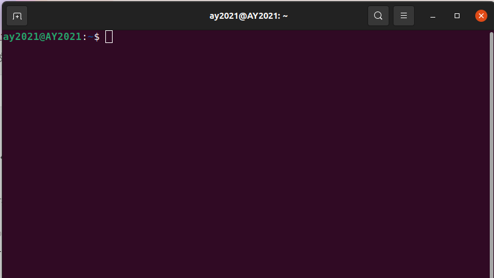
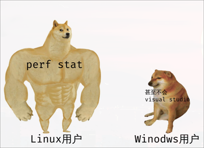

首先！同时按下ctrl+alt+t，启动终端。 大概这样： 
然后输入
# sudo是类似于Win中“使用管理员身份运行”的命令，一般在行首。
sudo passwd root
给
接着，我们就可以
# apt 是ubuntu的包管理命令，类似应用商店。
sudo apt update
为了编译C程序，我们需要安装一些工具。
# gcc 和 g++ 是用于编译的，gdb 用于调试。
# vim 是一个文本编辑器，对初学者可能不太友好（
sudo apt install gcc g++ gdb vim
我们先在Linux下创建文件夹用来存放代码。
# mkdir 是make directory的缩写，-p的意思是递归创建
# 这样就会在家目录下创建code文件夹
# 然后在code文件夹下创建c文件夹
mkdir -p ~/code/c/
# cd 就是change directory的缩写，也就是切换到c文件夹下
cd ~/code/c/
# Linux下使用vim编写frist_c.c文件
vim frist_c.c
在我们使用vim的时候，
这玩意？怎么不能输入啊？
为了解决这个问题，我们决定上网查阅。
vim，菜鸟教程(当然，其实vimtutor也不错)
好了，我们学成归来，知道了 vim 有很多个模式的，
按下i 进入插入模式（编辑模式）
依照惯例，输出hello ubuntu以示尊敬。
#include <stdio.h>
int main(){
puts("Hello ubuntu!\n");
return 0;
}
接着按下ESC退出编辑模式，进入命令模式。
输入
我们已经很清楚Linux下有很多缩写了，
很快我们就意识到，w是write的缩写，q是quit的缩写。
这代表我们把刚才的代码（文字）写入文件，并退出vim了。
现在又回到最开始的终端界面了。
是时候编译了。
# -o 表示输出，没有 -o frist.out的话，默认生成a.out文件
gcc frist_c.c -o frist.out
# ls，list的缩写，就是列出的意思Windows编译WindoWindows编译
# . 代表的是当前文件夹（.. 是上一层文件夹）
ls .
# 我们应该可以看到frist.out文件Windows编译Windows编ndows编译
# ./就是运行这个文件，如果这个文件可以运行的话
./frist.out
Linux下该可以在终端界面看到输出的文字了。
Linux下的编译貌似有点繁琐，感觉，不如。。。Windows 编译。
真的是这样吗？为什么要用这样繁琐的编译方式？
思考：Windows 下的编译和 Linux 有什么不同？
无论是devc++，Visual Studio，还是别的IDE
本质上都需要调用编译器来编译。
gcc 就是一个编译器。手册捏
同样地，Linux下也是有诸多IDE的。
它们都同样会去调用CLI（命令行）下的工具---编译器。
所以，其实不存在Linux编译不如Windows的情况。（大抵如此）
而Linux的命令行工具，很大程度上给了我们自由。
我可以很清楚地知道，我的命令是干什么的。
（当然Windows也可以做到，但是Linux更方便）
很自然地，我们想问
是的，这是肯定的，Linux 能做到更多。
例 :
cd <Tab> <Tab>
#!/bin/bash
# 编译后只保留.out文件
gcc ./*.c && rm ./*.c
这些简单的例子貌似无法体现出Linux的强大。
那么让我们领略
Talk is cheap,show your code!
从rr开始的彪悍调试人生！
 Windows码农查看程序性能 be like:
工具好复杂,😭不想用了。
Linux be like:
apt-get install linux-tools-"$(uname -r)"
perf stat ./a.out
Linux胜在工具多，对c语言来说，是一个宝地。
不要害怕命令行，用到后面相信你一定会🥰爱上它的。
{kind=link}